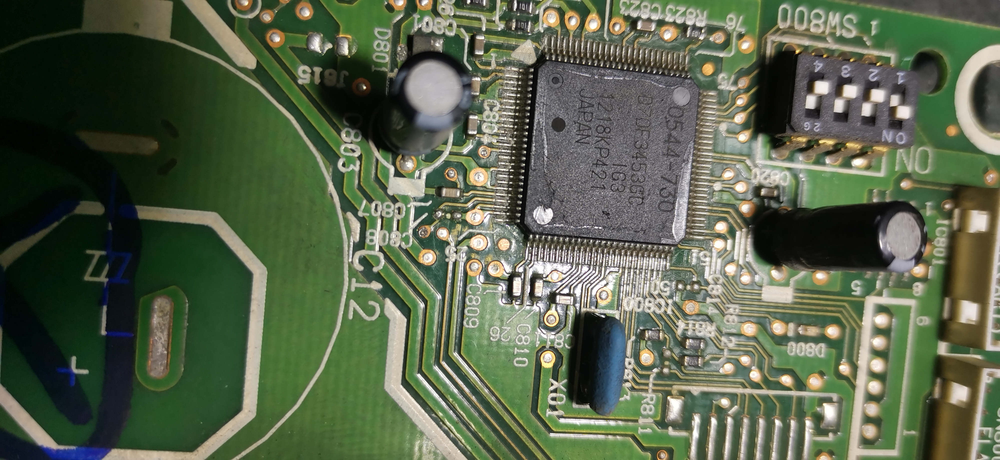

一款日本CPU的分析
env
朋友做维修，找我分析一个cpu 
如图型号是：D70F3453GC JAPAN 1218KP421
通过检索大概判定是nec的一个芯片。
分析
这个芯片大概看了,是V850E指令集的芯片，日本瑞萨的，分析起来不费什么工作。 主要找到这个cpu的ds手册，但是没有sdk和pg手册，所以正向的分析使用是不可取的了。 因为芯片里边有rom flash 存储，这使得代码不容易获取（已经攻击另说） 根据手册相同的cpu指令和型号类型能够获取同型号的设备的文档和代码，作为突破口，确保boot code执行的入口没有问题，然后进行初始化其它设备，整个分析的情况下是在黑盒子的情况进行的
主要就是猜，目的是同型号推断出此型号的设备信息。然后逐步追踪获取self-programming指令，和串口编程，当然有了他的指令集，剩下的编译部分就容易多了，不是什么
棘手问题，直接推就完事了。
总结
只是给我分享了照片，还没有空取他哪里拿设备。设备拿来之后再进行分析。手册在这里link1.